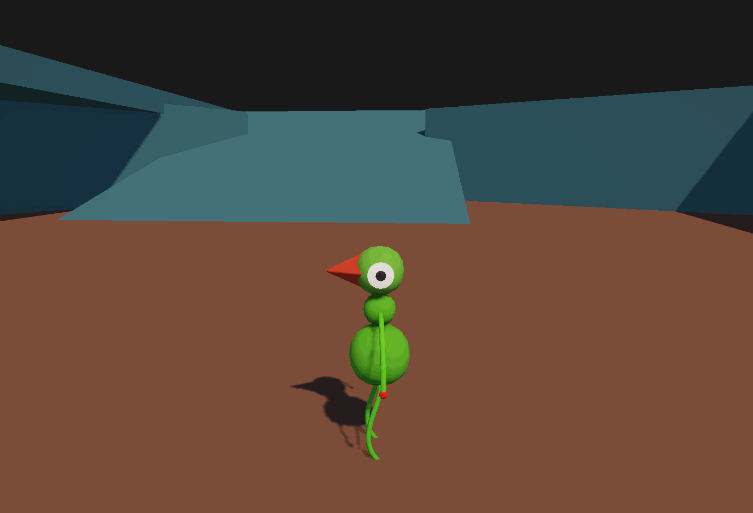

Bird Souls

Bird souls is a souls like that meets shadow of the colossus head on. Grapple and swing on giant beasts till you get to their weak spot and you can take them out!
For most of this project I've been focusing on the backend of the character development. As this game will be pretty large in scope I need a firm foundation to work off of. I'm working on a system that would allow me to create dark souls like combat with all the hitstop and the like. As well as have complex move states work in tandem with that system.